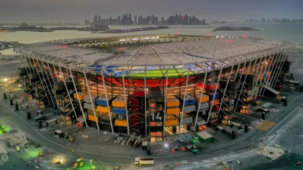
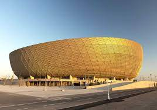
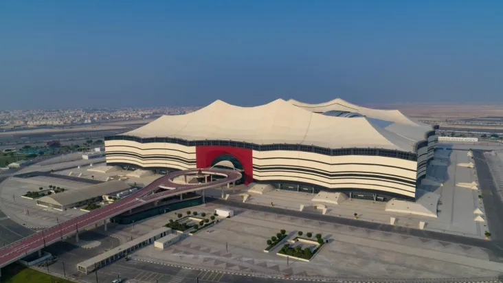

Home
Sobre
Seleções
Grupos
Informações
Copa do Mundo 2022
Taça da Copa do Mundo
Mascote da Copa do Mundo
Com um nome bem diferente nome:
La'eeb
Bola da Copa do Mundo 2022
Principais Estádios

974
Estádio construido com containers
Capacidade de 44.089

Lusail
Estadio da final
Capacidade de 80.000

Al Bayt Stadium
Estadio da abertura
Capacidade de 68.895